Rising like a pristine crown jewel out of the crimson sands, The Royal Alcázar stands as a monument to absolute authority—an incredibly preserved desert palace that once served as the beating heart of an empire.
The Royal Alcázar
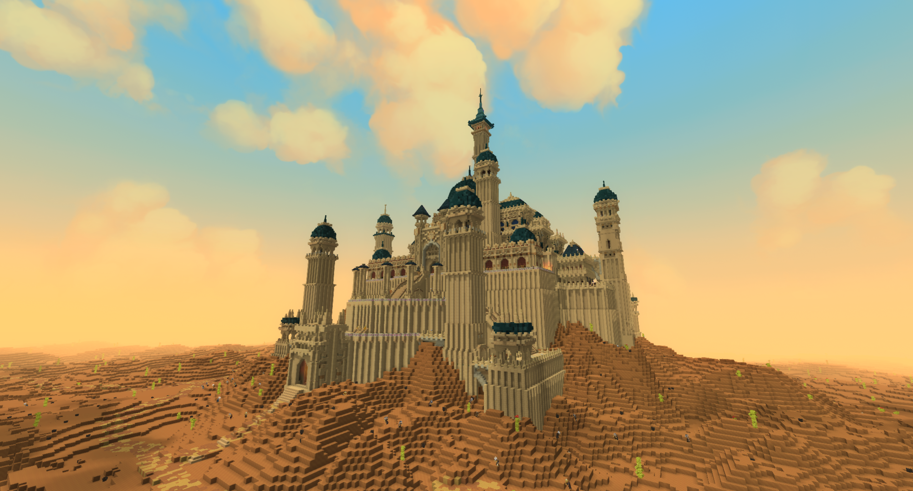
| Location Information | |
|---|---|
| Coordinates | X: 617, Z: 787 |
| Area Type | Rural Ruins |
| Mob Threat | Very High |
| Bandit Threat | High |
| Number of Chests | 19 |
| Water Source | Yes |
| Clean Water Source | No |
| Fireplace | No |
| Chef's Stove | No |
| Workbench | Yes |
| Available Loot | ||
|---|---|---|
| 🍎 Food | ✗ | |
| 🥛 Civilian | Tier 1 | ✗ | |
| ✂️ Civilian | Tier 2 | ✗ | |
| 🛠️ Civilian | Tier 3 | 4 | |
| 🛡️ Military | Tier 1 | ✗ | |
| ⚔️ Military | Tier 2 | 4 | |
| 🏹 Military | Tier 3 | 11 | |
| 🌟 Legendary | ✗ | |
Lore
Rising like a pristine crown jewel out of the crimson sands, The Royal Alcázar stands as a monument to absolute authority—an incredibly preserved desert palace that once served as the beating heart of an empire.
The Shadow of the Dirsan Dynasty
Deep within the scorching expanses of the red desert lies the majestic Royal Alcázar. This grand palace was constructed specifically for the royal family of the Dirsan, a powerful dynasty that ruled over this region of the world for generations. From these high, sun-baked walls, the Dirsan wielded immense political and economic influence, heavily dictating the fates of nearby regional hubs—from the wealthy ports of Al-Hayat to the fortified mountain terraces of Agafar.
While Al-Hayat pursued its cursed scarab trade and Agafar relied on its cliffside isolation, the Dirsan ruled them all with an iron fist and unrivaled diplomacy, orchestrating a golden age of desert trade.
The Roots of Power
While the Dirsan's political maneuvering was legendary, occult whispers suggest a much darker, mystical origin for their dominion. According to ancient court rumors, the true source of the royal family's eternal fortune and health was a mystical, ancient Tree kept hidden deep within the labyrinthine basement halls of the palace.
While the physical existence of this subterranean tree has never been officially confirmed by modern scholars, treasure hunters believe the legend is true. Guild archives whisper that any adventurer brave enough to navigate the dark, forgotten foundations of the palace and locate the sacred arbor will find a highly coveted, untouched **Legendary chest** resting among its roots.
An Unbroken Fortress
- The imposing outer walls, constructed to withstand both the relentless desert elements and heavy military siege.
- A barren, unforgiving surrounding climate that made any military push—living or dead—nearly impossible to sustain.
- An intricate, multi-layered layout specifically engineered with choke points and elevated parapets to easily repel attackers.
The Timely Exodus
Because the palace's tactical design and scorching environment deterred the early, disorganized undead hordes for a long time, the Royal Alcázar remains almost fully intact today. Unlike the frantic, bloody collapses of other cities, the royal family and their loyal subjects recognized the shifting tides of the world early. They successfully executed a planned, orderly, and complete evacuation of the palace, taking their immediate valuables with them.
While their final destination remains one of the world's greatest mysteries, it is widely believed that their migration across the sands was highly organized and infinitely more successful than the ill-fated flight of the mages in the Hot Air Balloon convoy. They simply vanished into the horizon, leaving behind a pristine ghost palace.
Present Day
For seasoned travelers navigating the late-game hazards of the red desert, the Alcázar is a premier destination. Because the city was abandoned systematically rather than pillaged, the majestic courtyard halls and luxurious living quarters are ripe for exploration. While the surface levels yield high-quality civilian gear and imperial relics, the true challenge awaits those who dare to dive into the dark basement levels in search of the legendary Dirsan roots.
Step softly through the quiet, unbroken corridors of the Dirsan kings. The Royal Alcázar has stood the test of time and plague—but the secrets sleeping in its dark basement halls may still be very much alive.
Gallery
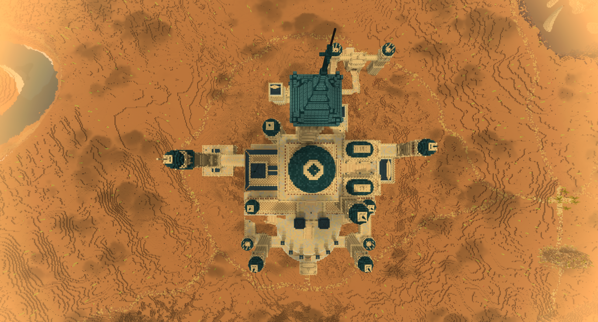
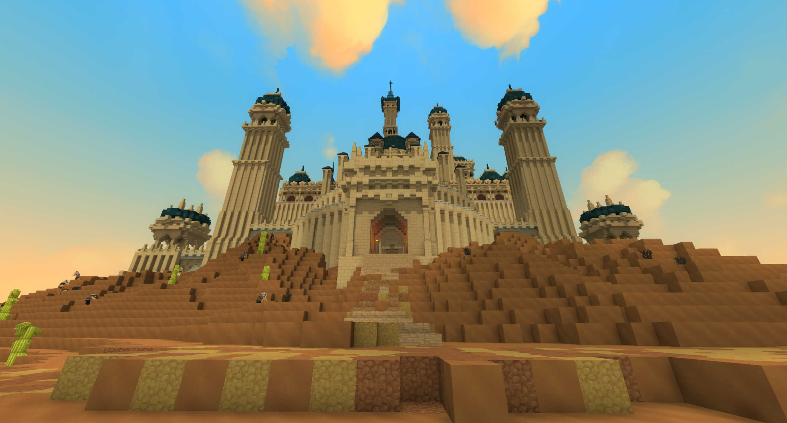
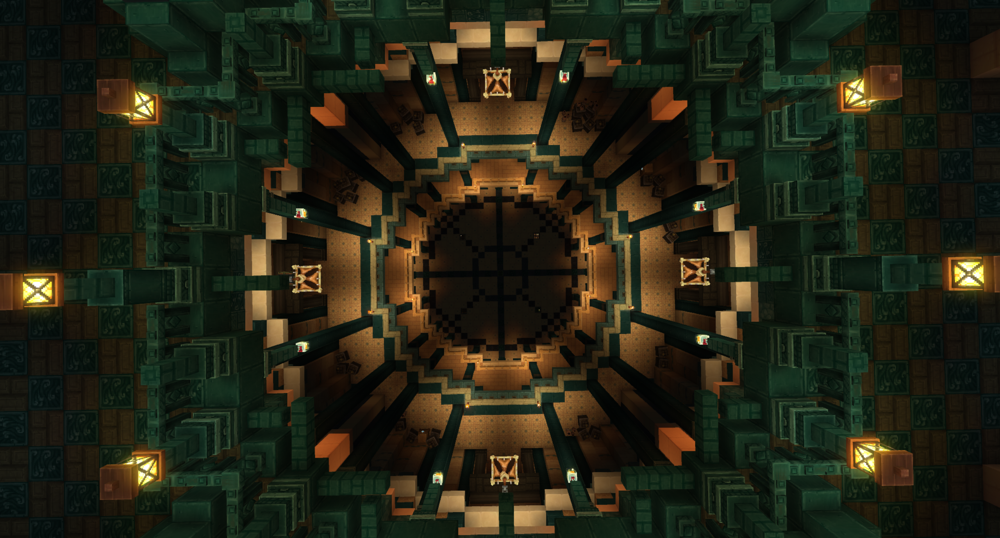
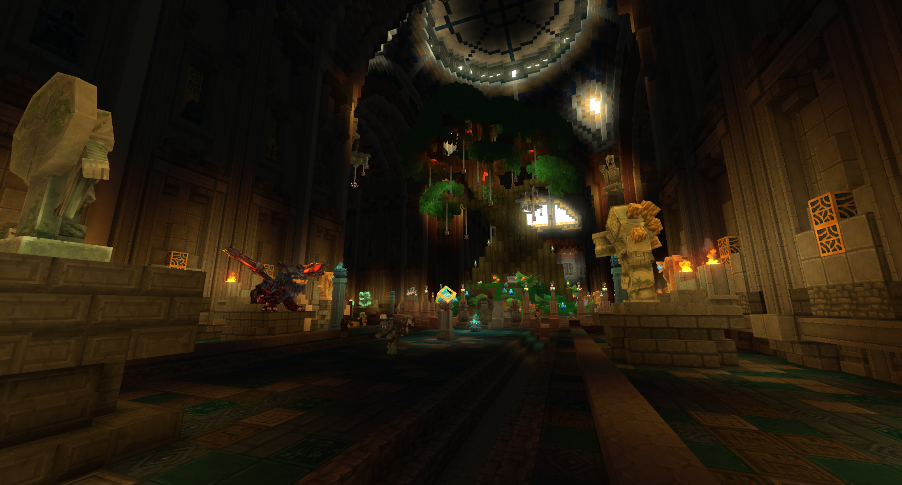
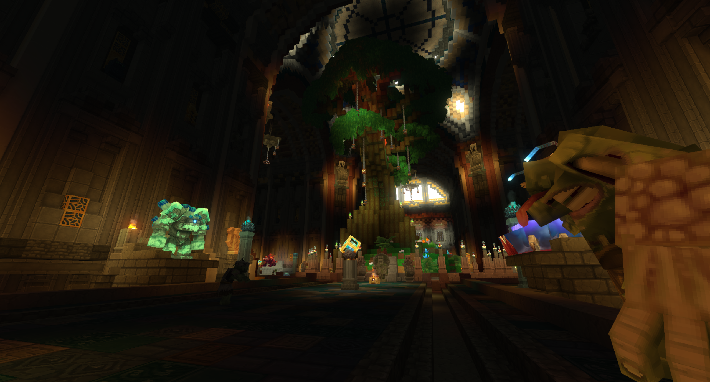
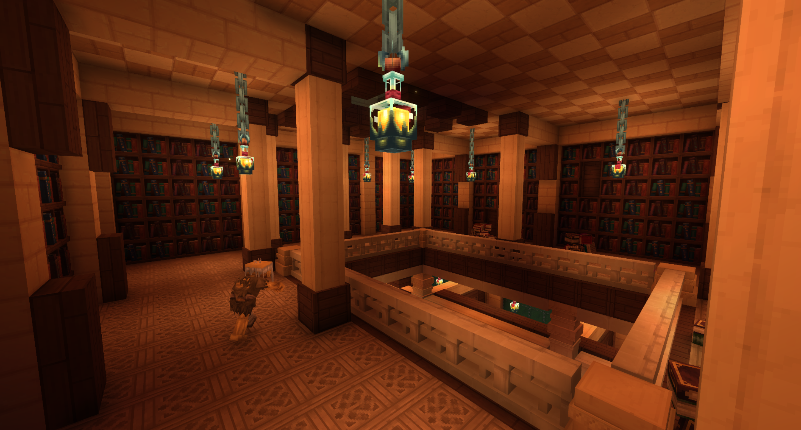
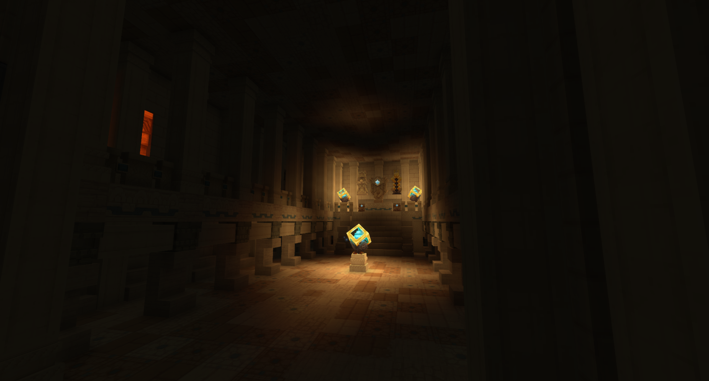
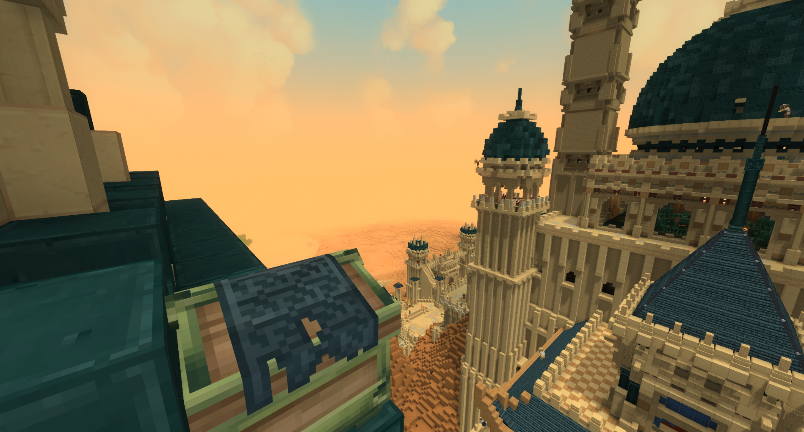
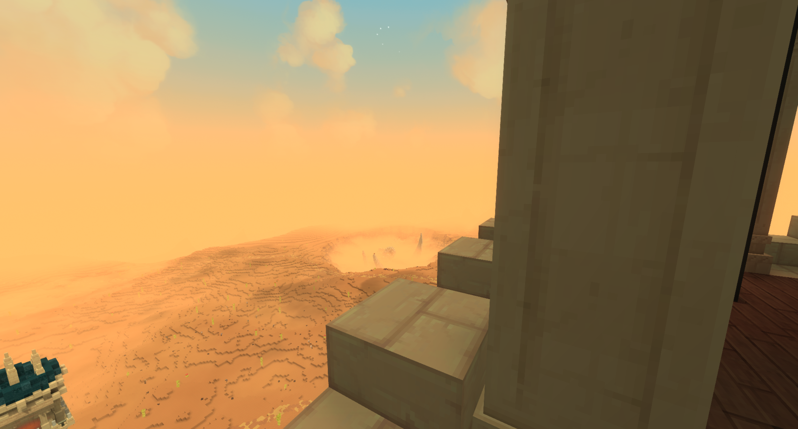
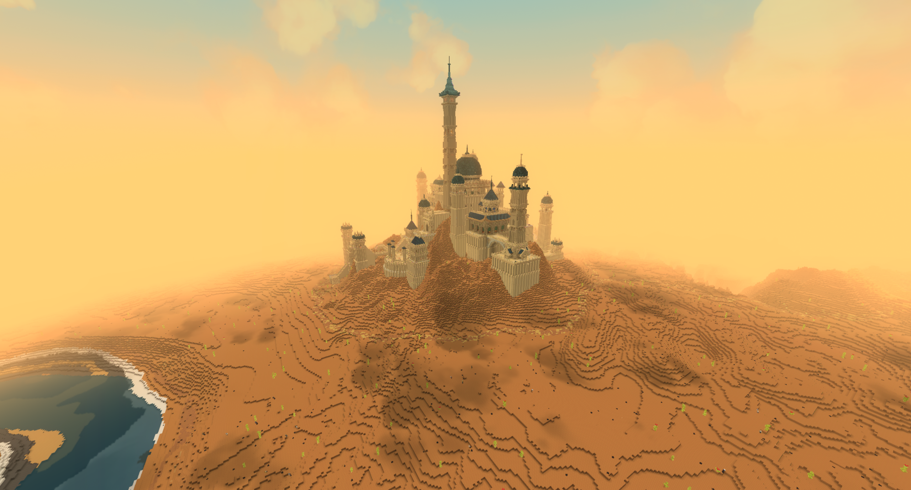